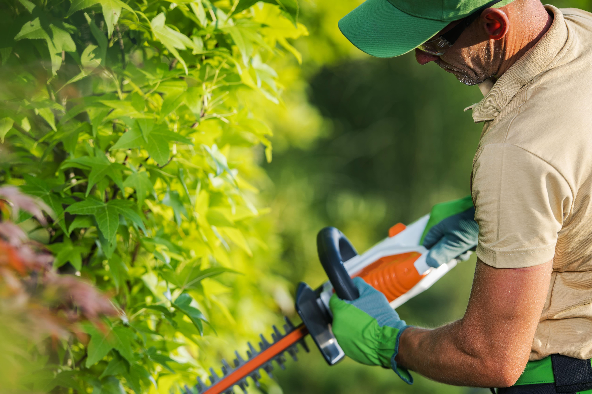

We'd be happy to share our expertise and explore potential solutions to address your
inquiries.
LET'S EMBARK ON YOUR DREAM PROJECT
Beat the Summer Scorch: Planting Strategies for Shrubs, Trees & Perennials
O VERCARDO VERCARDO VERCARDO
Unveiling the Seasonal Sophistication: Maximizing Summer Planting Potential with Vercardo

As the sun-drenched days of summer unfurl, gardening aficionados find themselves pondering a perennial question: Is it opportune to procure the verdant delights showcased at the garden center, or must one exercise patience until the arrival of autumn's embrace? While conventional wisdom may advocate for the autumnal equinox as the prime planting epoch, the notion that summer is bereft of planting opportunities is an antiquated fallacy. If a resplendent shrub, a majestic tree, or a perennial masterpiece captivates your horticultural senses, hesitate not! The whims of botanical fate may not favor its availability upon the advent of cooler climes. Sometimes, the prudent course is to seize the plant you covet and promptly introduce it to your garden's embrace. Fear not the summer planting endeavor, for with a modicum of extra care and attention, these arboreal treasures shall thrive as splendidly as if transplanted in the fall.
In response to the burgeoning queries surrounding summertime planting conundrums, Vercardo has meticulously curated a compendium of answers, serving as your steadfast companion in every verdant season. Should inquiries sprout forth or gardening insights bloom within your mind, do not hesitate to summon us via call or email, and our seasoned team shall eagerly provide enlightenment.
Navigating the Summertime Planting Voyage: A Veritable Odyssey
Let’s begin with what we at Vercardo have found to be “urban” myths that require demystifying. Let’s have a look at some frequently asked questions and a few of our best practice solutions and answers to these questions. Follow us:
Question #1: Can I dare to plant shrubs and trees amidst the summer's fervor?
Absolutely! The summer sun does not preclude the plantation of trees, shrubs, and even perennials. However, the key to fostering their flourishing amidst the summer's ardor lies in bestowing upon them an extra measure of care, surpassing that which you typically lavish upon their autumn or spring-planted counterparts.
Question #2: What rituals must I observe when engaging in summer planting?
The cardinal ritual entails nurturing your nascent shrub or tree with profound hydration, a vital elixir for their vitality amidst the summer's swelter. Delve deeper into our treasury of summer planting wisdom below.
Question #3: When does the summer sun cast its unyielding shadow upon the prospects of planting?
Abstain from planting amidst extreme conditions such as severe drought, particularly in locales besieged by water restrictions. Similarly, avoid planting during scorching, arid, or blustery periods, or when rainfall inundates the earth, leaving standing water in its wake.
Question #4: What botanical specimens should I refrain from planting amidst the summer's zenith?
Refrain from planting bare-root specimens and undertaking the transplantation of newly divided or freshly unearthed plants during the summer's reign. Reserve these endeavors for the verdant embrace of fall or the rejuvenating caress of spring.
RDO VERCARDO VERCARDO VERCARDO
A Few Tips From Vercardo
Let’s delve below into a few tips along with things we’ve found in our experience that can aid with potential summer planting success:
Tip #1. Embrace Container-Grown Opulence: Opt for container-grown plants from your local emporium of botanical delights. Eschew the transplantation of bare-root or newly excavated specimens, as container-grown varieties seamlessly integrate into their new abode without disrupting their delicate root systems.
Tip #2. Seize the Moment: Upon acquiring a botanical treasure in summer, do not tarry until autumn's advent. Swiftly usher it into the nurturing embrace of your garden's soil, thereby ensconcing its roots in a realm of cool respite and enhanced moisture retention.
Tip #3. Choose Wisely, Plant Prudently: Select a cloudy or temperate day, or embrace the twilight hours as temperatures relinquish their diurnal zenith. These moments afford the ideal conditions for planting endeavors, shielding delicate flora from the scorching gaze of the summer sun.
Tip #4. Hydration, the Elixir of Vitality: Prior to planting, inundate the freshly excavated recess with water, allowing it to imbibe deeply before welcoming your botanical masterpiece. Post-planting, administer a profound soaking to the verdant newcomer, ensuring its roots are suffused with moisture.
Tip #5. Mulch, a Mantle of Protection: Envelop the planted specimen with a generous layer of organic mulch, or opt for non-organic alternatives for firewise landscaping endeavors. This verdant mantle shields the soil from desiccation, curtails weed proliferation, and fosters optimal moisture retention.
Tip #6. Water, a Sustaining Symphony: During the initial fortnight post-planting, bestow copious quantities of water upon your nascent shrub or tree, particularly amidst the throes of scorching, parched conditions. Adjust watering frequency in response to climatic vagaries, ensuring the roots remain ensconced in a realm of optimal hydration.
Tip #7. Vigilance Amidst the Verdant Tapestry: Remain attuned to the moisture levels within the soil, vigilantly averting desiccation of the roots. In regions beset by summer drought, the peril of overwatering diminishes, yet exercise caution in locales blessed with abundant rainfall.
Tip #8. The Absence of a Green Thumb Need Not Deter: Even amidst brief sojourns, do not relinquish your watering duties. Enlist the aid of a benevolent neighbor or invest in automatic irrigation systems to safeguard your verdant charges in your absence.
Tip #9. Innovative Irrigation Solutions: Consider the deployment of specialized apparatus such as tree gators to administer water with precision and efficiency, particularly in locales grappling with drought conditions. These waterwise innovations epitomize a conscientious approach to horticultural stewardship.
Tip #10. A Testament to Patience: As the golden days of summer wane, exercise patience in nurturing your botanical charges until the advent of fall's embrace. The fruition of your efforts shall manifest in the resplendent growth that heralds the vernal dawn.
To Conclude
In conclusion, the summer planting epoch brims with opportunities for horticultural excellence, provided one navigates its verdant seas with sagacity and care. With the august guidance of Vercardo and adherence to the precepts outlined herein, your garden shall burgeon with vitality, a testament to the perennial allure of nature's bounty amidst the changing seasons.
COLLABORATE WITH VERCARDO – BRING YOUR VISION TO LIFE
We're passionate about transforming ideas into thriving landscapes, functional buildings, and flourishing horticultural spaces. We don't just offer services; we become your trusted advisor, sharing insights, suggesting creative options, and answering your questions every step of the way.